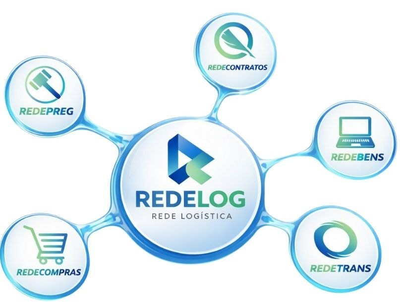

O QUE É A REDELOG?
A Rede Logística – Redelog tem como objetivo integrar os servidores que desempenham funções logísticas no Poder Executivo do Estado do Rio de Janeiro, oferecendo oportunidades de comunicação, de troca de informações e de capacitação.
Fazem parte da Redelog as redes funcionais Redepreg, Redetrans, Redecontratos, Redebens e Redecompras.
REDES FUNCIONAIS DA REDELOG
A atuação operacional da Redelog é desdobrada em cinco redes funcionais, cada uma coordenada por especialistas temáticos com o objetivo de apoiar os gestores setoriais.
Redecompras
Integra gestores e técnicos para troca de informações sobre sistemas de compras e contratações.
Ver RedeRedepreg
Orienta, padroniza e capacita os pregoeiros, promovendo sua certificação e comunicação.
Ver RedeRedecontratos
Padroniza e orienta a gestão e a execução dos contratos administrativos.
Ver RedeRedebens
Integra e orienta servidores responsáveis pela gestão de bens móveis e do acervo patrimonial.
Ver RedeRedetrans
Integra e orienta servidores na gestão de transportes e combustíveis, promovendo padronização de procedimentos.
Ver Rede